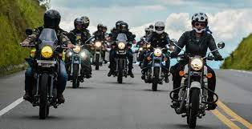
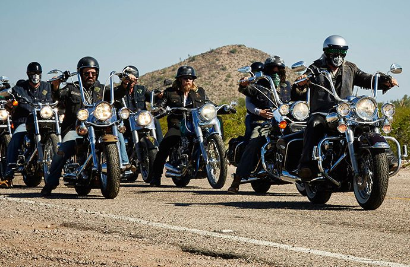
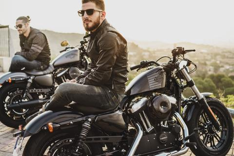

Full Bikers
Objetivo
Full biker está dirigido a todos los usuarios que cuenten con una motocicleta o les
apasione saber sobre ellas, este contenido más que nada está encaminado a jóvenes y jovencitas de 18 años
en adelante, así como también va dirigido a las personas mayores de entre 30 a 60 años de edad, ya
que regularmente son estas las edades en las que los usuarios o las personas cuentan con una salud
regular y condiciones estables en el cuerpo humano.
Sabemos que hoy en día las motos apasionan a muchos jóvenes y señores, ya que las motos son objetos
utilizados para tener una vida sobre ruedas, algunos usuarios les apasionan poder salir a rodar con
compañeros o salir a visitar lugares y disfrutar de los paisajes que se ven sobre carretera.
En nuestro sitio web podrán apreciar diferentes recomendaciones, equipamiento y más que nada consejos
de las motocicletas esto está hecho con la finalidad de que hay usuarios que no cuentan con suficientes
recursos y buscan motos al alcance de su economía, sin saber cómo mantenerlas en óptimas condiciones.
Esto lo hacemos con la finalidad de que los usuarios puedan encontrar información más rápidas y puedan
enfocarse en lo que quieren o quieran saber sobre ellas.

Significado de Biker
La palabra Biker proviene del inglés y su traducción literaria seria “motociclista”, si bien
su uso en el mundo custom podría traducirse en varias palabras como motorista o motero.
Concretamente suele utilizarse para denominar al usuario de motocicletas custom (incluso streetfighter)
y no para los usuarios de otro tipo de motos como pueden ser las de motores de dos tiempos, motos de
trail, trial, carretera, etc.
Desde el principio del movimiento Biker, se establecieron una serie de principios o normas no escritas,
que les permiten considerarse un grupo o tribu urbana con unos fundamentos en común.
Si bien sus motocicletas favoritas son las de estilo custom o especialmente la marca
Harley Davidson, la moto no hace al Biker. Se podría decir que Biker se considera todo
aquel donde la pasión por las motos y su estilo de vida está por encima de cualquier cosa,
independientemente de la motocicleta que conduzca.

Vestimenta
Hablar de una indumentaria típica de un Biker, sin duda es generalizar, si bien existe una serie de atuendo que
los identifica. La prenda más fundamental es el chaleco (mayoritariamente de cuero) con parches cosidos, que
suele ir acompañado de botas de cuero, camiseta y pantalones vaqueros o de cuero.
Los complemento también suelen definir al Biker y los más usuales son las gafas oscuras, cascos abiertos
o tipo jet o carteras con cadena por poner algunos ejemplos.
El atuendo femenino suele ser muy similar, si bien las camisetas suelen ser más femeninas
(sin mangas, con escote, etc.) siendo la ropa en general ajustada al cuerpo.
Los tatuajes siempre se han encontrado muy asociados al Biker o motero y son lucidos por
una gran mayoría de los mismos.
